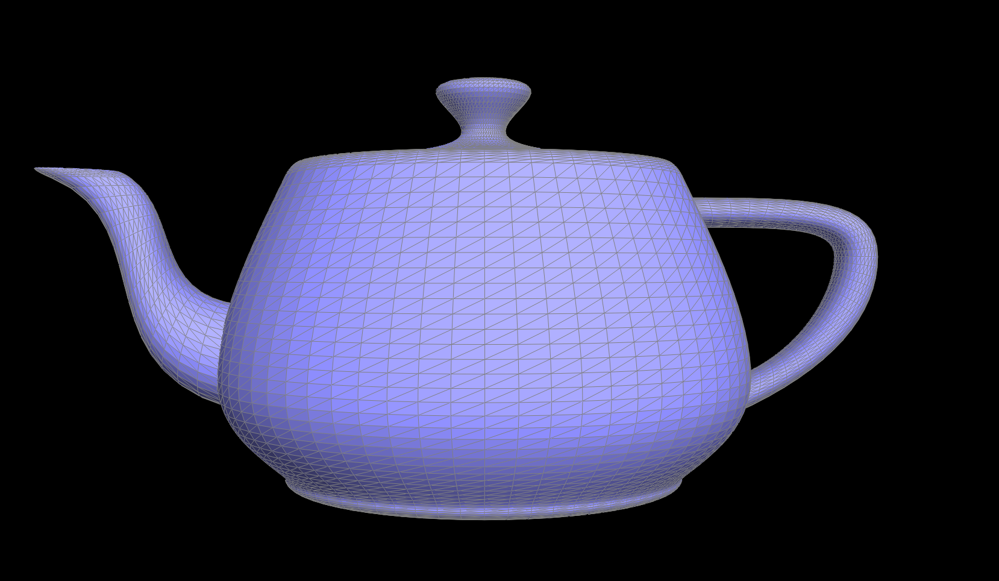
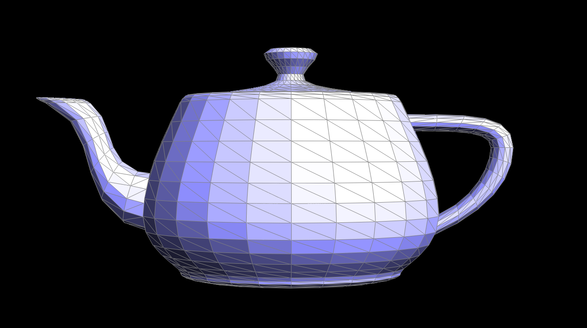
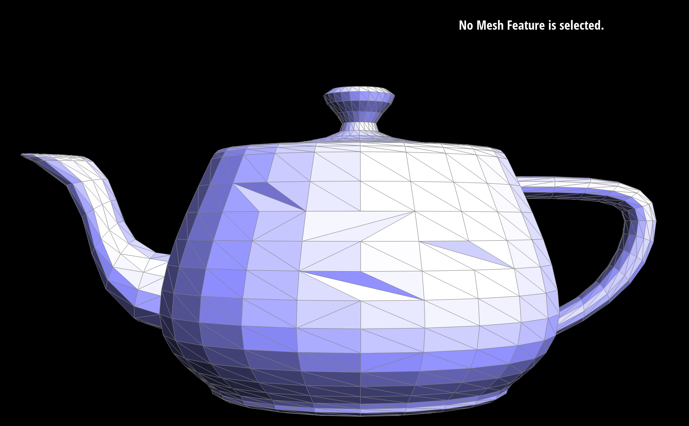
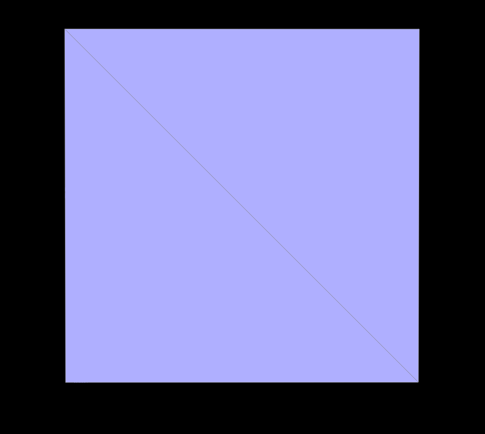
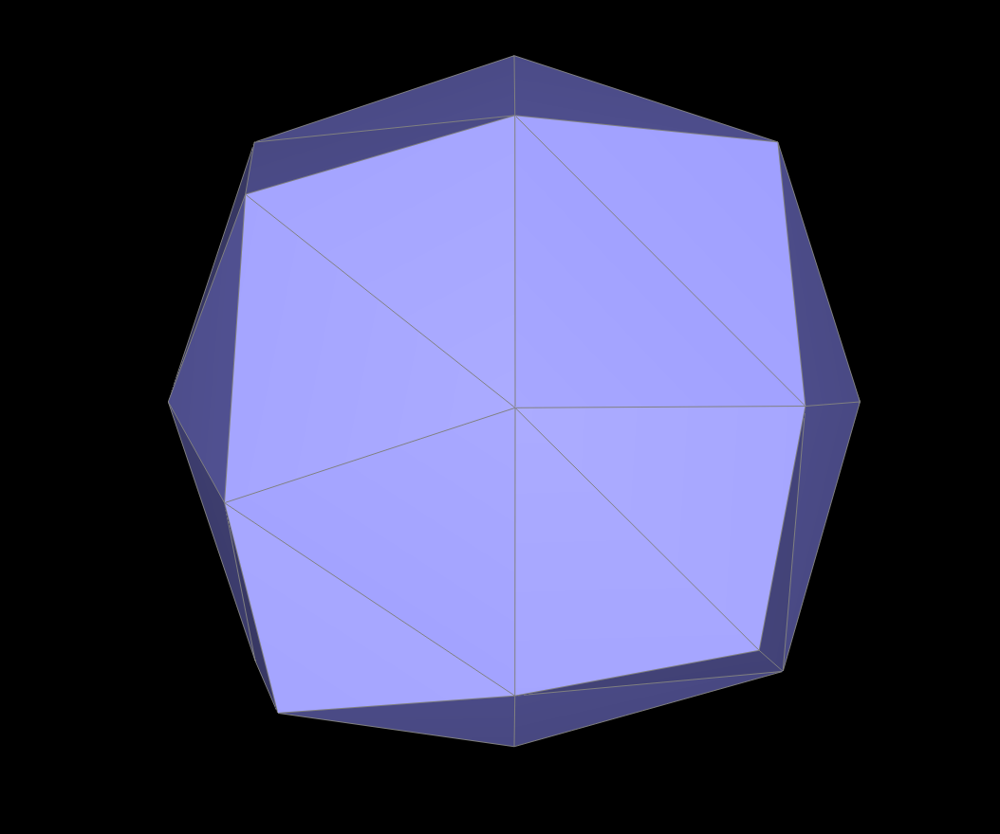
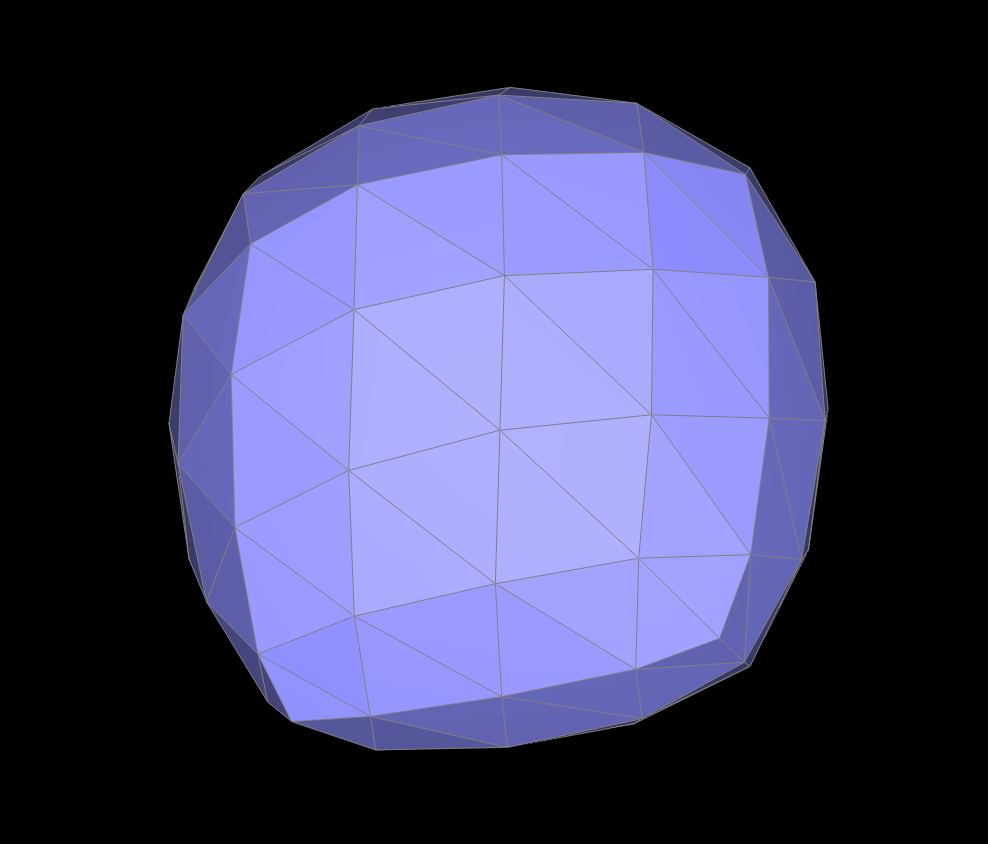
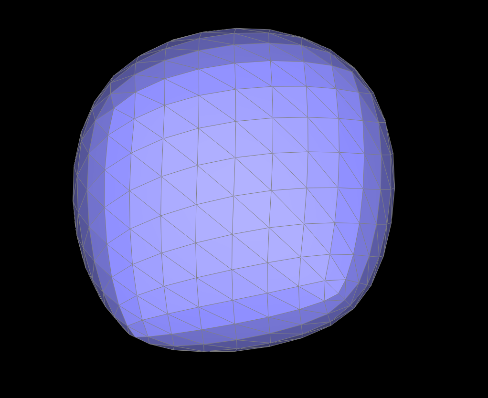
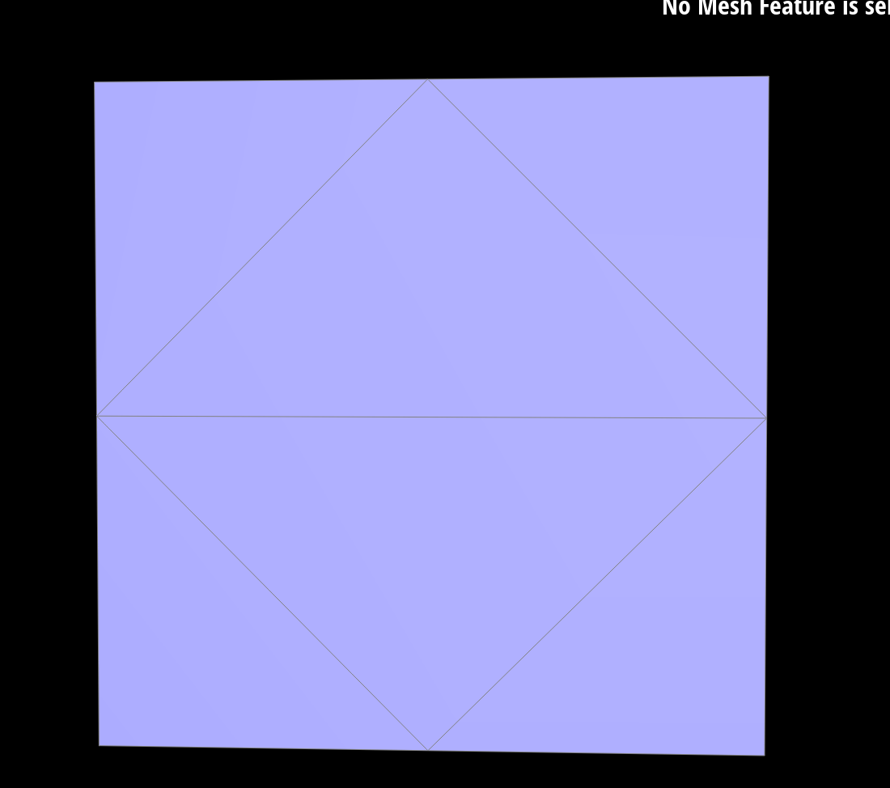
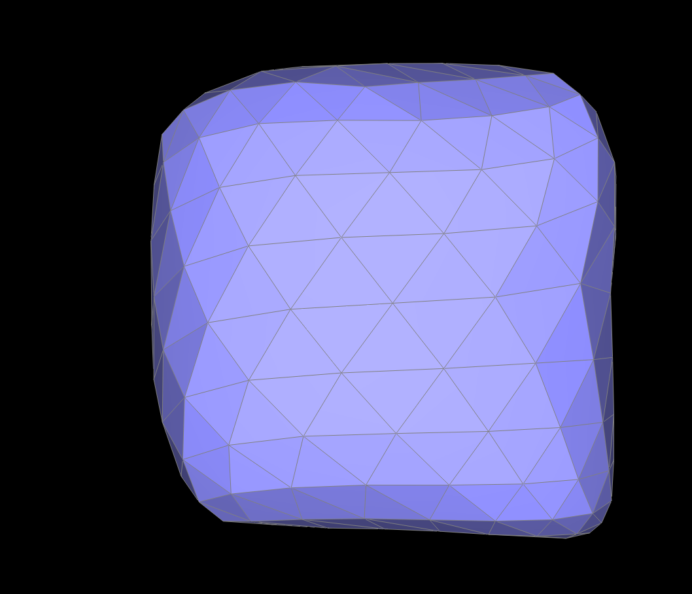

By Lucy Yang and Nicole Leung
De Casteljau's Algorithm
De Casteljau’s algorithm takes in a set of control points that define the Bezier curve and a parameter, t, which is a fraction less than one. The algorithm recursively finds intermediate points between adjacent control points of the same level until only one point remains, using t to determine the location of the intermediate points. In `evaluateStep(...)` we used the equation given in the spec and the given arguments to find the intermediate control points that lie between the given control points and return these values in the form of an std::vector.


Completed Bezier Curve

Altered Bezier Curve

De Casteljau’s algorithm can be extended to Bezier surfaces, which are a mesh of control points in two directions with parameters u and v, by subdividing the mesh in the u and v directions, interpolating control points, and repeating until we converge to a final interpolated control point, which represents the evaluated point on the Bezier surface.
In evaluateStep, we implement one step of the de Casteljau algorithm, which takes a vector of 3D points and a scalar parameter t and returns a vector of either intermediate points or the final interpolated vector after one step of the algorithm.
In evaluate1D, we iteratively call evaluateStep until only one point remains from the vector of points at parameter t, which is the final interpolated vector that we return.
In evaluate, we evaluate the Bezier patch at parameter (u, v) and compute a set of curve points along a single direction of the patch, and then compute the final interpolated vector along the other direction using evaluate1D.
In order to find the area-weighted vertex normals, we traversed every halfedge associated with the vertex and added the normal and area of the face related to each halfedge to a respective std::vector. We then used these values to find the weighted average of the normal vectors with respect to the fraction of their face-area divided by the sum of all neighboring face-areas.


In order to implement the edge flip operation, we first save all of the half edges that constitute the edges of the quadrilateral made by the two triangles in order to maintain consistency during and after we flip the edge. We then update vertex half edge pointers, reassign half edges and vertices around the flipped edge by updating each half edge’s neighbor, update face half edges and faces incident to the flipped edge, and then we update next pointers of half edges around the flipped edge to maintain mesh connectivity. We finally return an iterator over the flipped edge.
Some challenges we faced related to debugging were that after multiple flips of the same edge a hole would appear in the mesh - first entire faces would disappear, and then a small slit would appear along the edge after flipping the edge. We fixed this after realizing that we needed to assign faces new half edges, and also assign half edges their correct face. We also struggled with flipped edges deforming our mesh slightly - we were able to fix this after we realized that when we were setting neighbors we were incorrectly setting the vertex of the flipped half edge.
Before flipping edges:
After flipping edges:
We first labeled the existing halfedges in the corresponding mesh segment. Then we created a new vertex, three new edges, six new halfedges, and two new faces. We reassigned the pointers accordingly in order for the mesh to resemble the correct “splitEdge” result. One debugging trick we used religiously was to comment out specific blocks of code, and then re-run the program in order to pinpoint what could be causing the error. Additionally changing only one attribute at a time allowed us to see how each pointer reassignment affected the resulting performance of splitEdge.
Before and after edge splits:


Before and after edge splits and flips:


After implementing splitEdge we realized that splitting an edge multiple times, or splitting and then flipping an edge, led to a blank hole, as if the face of that particular edge disappeared. After confirming the logic of our implementation we ended up pinpointing the problem to our pointer reassignments. After changing multiple things that we believed could be the issue (vertex-halfedge pairs, face-halfedge pairs, etc.) we re-analyzed how we used setNeighbors to reassign the halfedge elements. It turns out we had been labeling the wrong next-halfedge for some of the new halfedges, and were able to fix this bug.
In this task we utilized loop subdivision to upsample a mesh to increase its resolution. We first iterate through all vertices of the mesh and mark them as part of the original mesh, and we compute the new vertex position using the loop subdivision rule and store it in the newPosition field of the vertex class. We then iterate through all edges and compute updated vertex positions associated with each edge, storing them in the newPosition attribute of the edge class by averaging positions of the vertices connected to the edge and their neighboring vertices. We then split every edge in the mesh that wasn’t created as a result of a split, and update the returned vertex’s newPosition to the edge’s newPosition. Finally, we flip any edge that connects an old and new vertex that was not part of the original mesh, and we copy every vertex’s newPosition to its position field in the mesh.
The most significant challenges related to debugging we faced were incorrectly using a vertex’s centroid attribute to calculate the average position of neighboring vertices, which we fixed by making our own method to calculate the average position, and we also faced challenges with incorrectly marking 3 edges as new in our splitEdge method rather than 2 which was causing us to flip too many edges. To fix this, we added an isSplit attribute to each edge in order to ensure we don’t split an edge that was added as a result of a split. We also briefly struggled with an issue of our whole mesh disappearing, which was a result of us using integer division rather than float division, which always rounded down to 0.
After loop subdivision, sharp edges and corners become more and more smoothed and rounded until the cube looks more like an asymmetrical sphere. Pre-splitting edges that contribute to sharp features of the mesh can help maintain those features by introducing additional vertices along those edges.
Before loop subdivision:
After one iteration of loop subdivision:
After two iterations of loop subdivision:
After three iterations of loop subdivision:
Repeated subdivisions on the cube result in asymmetry because the original mesh’s vertices are being redistributed based on the average of neighboring vertices, which leads to a compounding asymmetry as the number of loop subdivisions increases. Some regions also have unequal vertex distribution, which contributes to the asymmetry. To fix this, we can flip edges connecting opposite corners to ensure that they are aligned properly, which maintains symmetry along diagonal edges, while strategic edge splits aim to distribute vertices more evenly. Below is a simple example of how even just preprocessing a few edge flips and splits makes the symmetry much better.
Simple preprocessing:
This produces sharper edges and slightly better symmetry!
